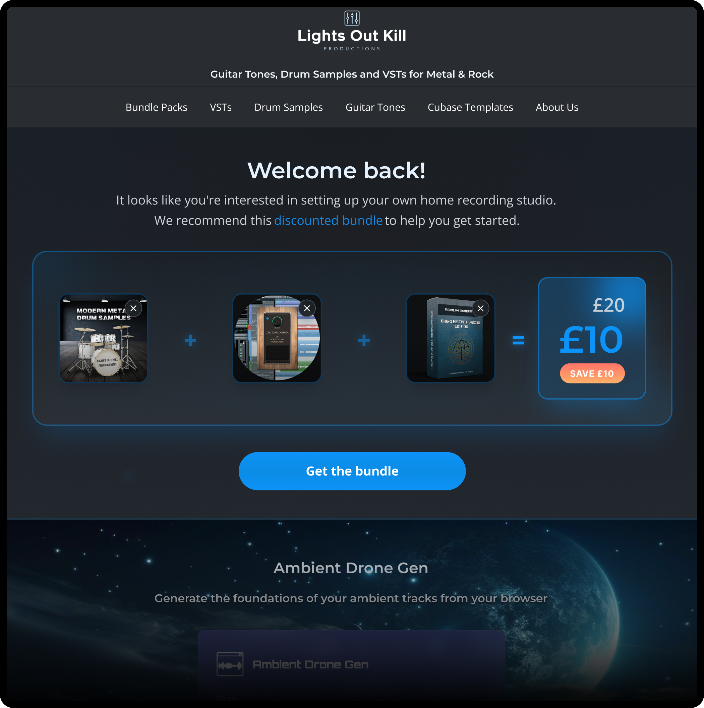

AI for personalised recommendations
Why it mattered
Returning users often land on generic pages that do not reflect what they are actually trying to do. I wanted to explore how AI could help create a more tailored experience.
Key decisions
- Predicted intent based on previous user activity
- Identified user profiles (guitarists, drummers, producers etc.)
- Used an LLM to generate a tailored welcome message
- Used recommendation APIs to build product bundles
Outcome
As an exploratory concept, success was assessed through user testing, where 70% of participants agreed that the recommendations matched their interests. The other 30% felt indifferent or did not find it useful.
Personal reflections
This exploration helped me understand how different AI services can work together to create personalised experiences, while also supporting the goal of increasing revenue per visitor.
